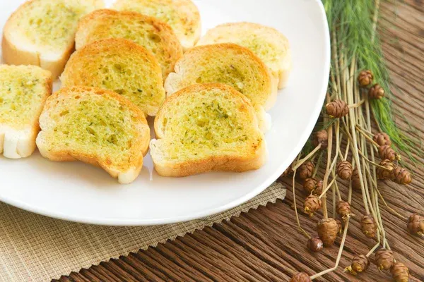

Click here to go back to the main recipe page.
Garlic Bread

Description
This garlic bread spread recipe makes tasty homemade garlic bread that goes great with most Italian dishes.
This dish is mostly a spread recipe that can be put on bread.
Ingredients
- 1/2 Cup butter, soft
- 1/4 Cup grated parmesan cheese
- 2 Cloves garlic, minced
- 1/4 Teaspoon dried marjoram
- 1/4 Teaspoon dried basil
- 1/4 Teaspoon fines herbs
- 1/4 Teaspoon dried oregano
- 1/4 Teaspoon dried parsley
- Ground black pepper to taste
- 1 loaf unsliced italian bread
All of these ingredients are necessary to an extent, many can be replaced with various other options. Many are also intentionally
left broad for the cooks discretion. It is recommended that beginners follow the recipe more tightly however.
Many measurements are also up for the cooks discretion the previous is just a rough estimate for this recipe.
Recipe Steps
Disclaimer: Ensure you possess the proper cooking pots and utensils before proceeding with a recipe. This greatly affects the recipe result.
- Gather ingredients and preheat the oven to 350 degrees F (175 degrees C).
- Mix butter, Parmesan cheese, garlic, marjoram, basil, fines herbs, oregano, parsley, and pepper together in a bowl until thoroughly combined.
- Slice Italian bread loaf in half lengthwise; spread each half generously with the garlic butter mixture. Transfer onto a baking sheet.
- Bake on the top rack of the preheated oven until butter mixture melts and bubbles, about 10 to 15 minutes. Turn on the oven's broiler and broil until the bread is your desired shade of golden brown, 1 to 2 more minutes.
A few other toppings can be added to enjoy to the fullest!